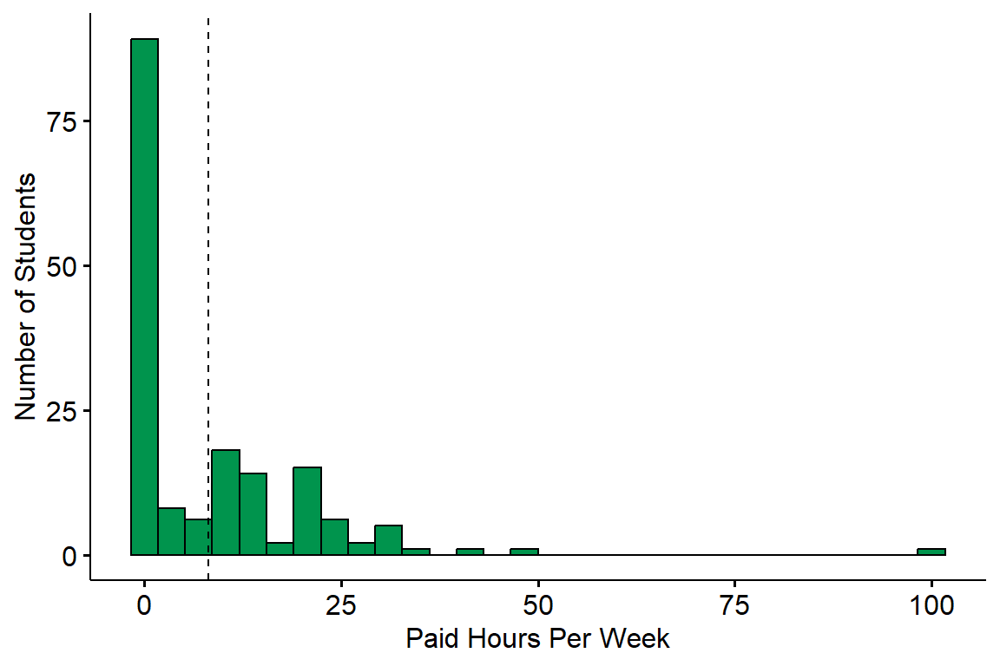
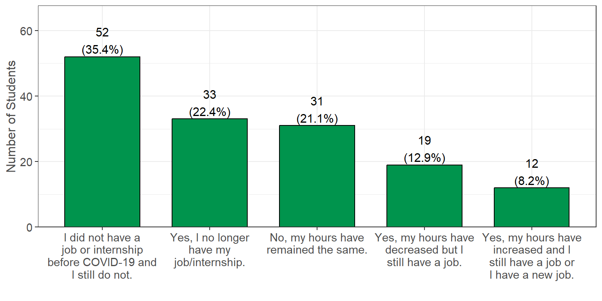
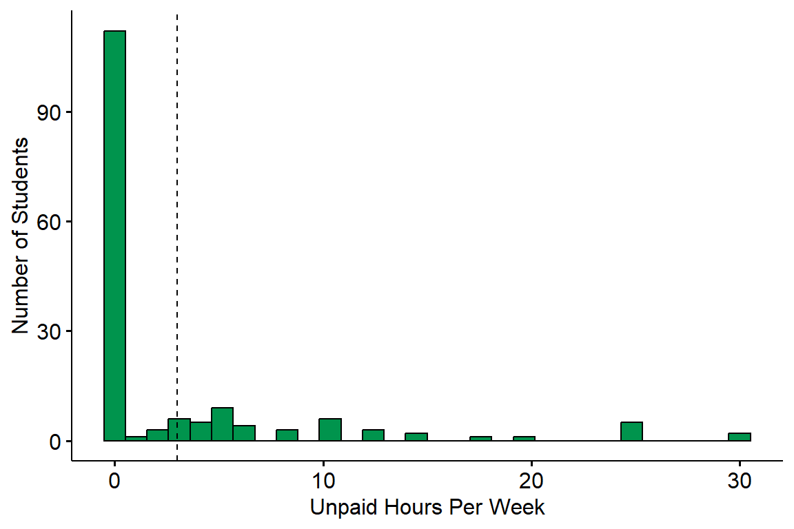
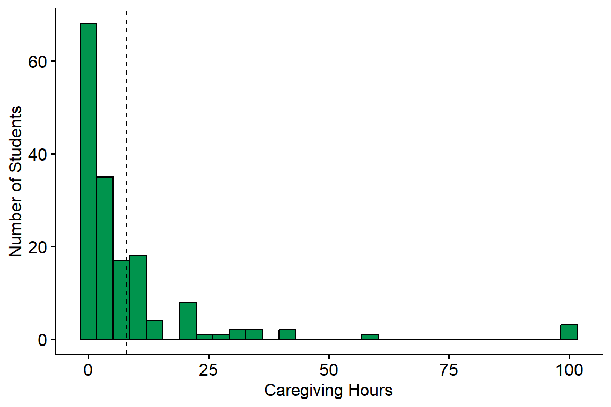
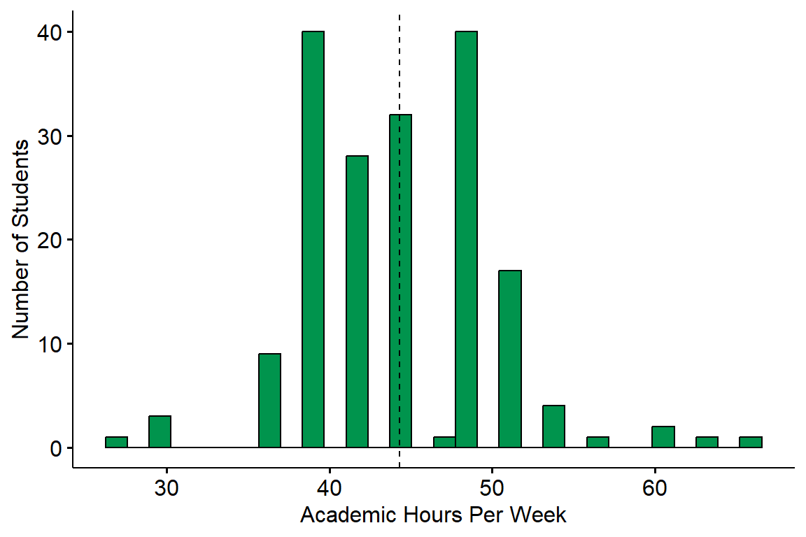
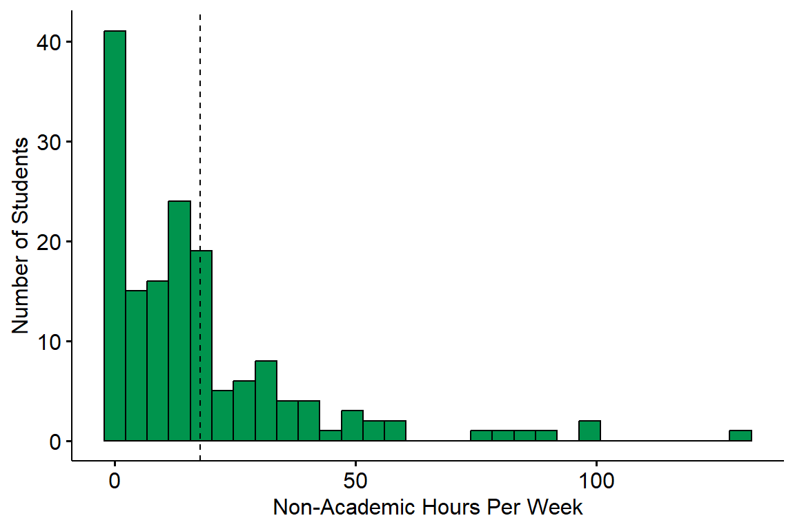
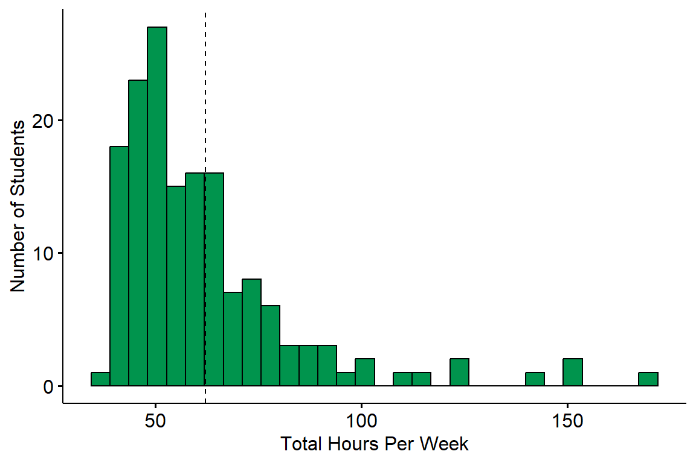

Workload
Students were asked to report information regarding their workload. This includes work from both paid/unpaid jobs, academic work, as well as time spent caregiving for any family members.
As a reminder, students had the option to select “Prefer not to answer” for all questions, and these responses were set as missing values. In addition, 11 (6.0%) students did not finish the survey. The n reporting refers to the total number of non-missing responses, while the percent reporting reflects the percent of non-missing responses.
Weekly Paid Work Hours
Survey Question: Estimate the number of hours you work in a PAID job (e.g. server at a restaurant, office assistant, etc.) or paid internship (e.g. training, shadowing, or practicum) per week.
Summary: Students reported a wide range of paid work hours per week with an average of 8.16 hours (denoted by the dotted line) and a median of 0. The majority of students worked either part-time or not at all. Only 3 (1.8%) students were considered to be working full-time (40 or more hours per week).
Impact of COVID

Survey Question: Have the hours you work in a PAID job or internship changed due to COVID-19?
Summary: A total of 52 (35.4%) students reported not working prior to COVID, while 31 (21.1%) reported that their hours have not changed due to COVID. There were 19 (12.9%) students that had their hours decreased, 33 (22.4%) that no longer had a job/internship, and 12 (8.2%) that had their hours increased.
Unpaid Work Hours

Survey Question: Estimate the number of hours you work in an UNPAID internship (e.g. training, shadowing, practicum, and/or volunteer, etc.) per week. Do not combine with answers above.
Summary: The average number of unpaid work hours was 3 (denoted by the dotted line) and the median was 0. A total of 112 (68.7%) students did not work at an unpaid job/internship, while 20 (12.3%) students reported working 10 or more unpaid hours every week.
Unpaid Caregiving Hours

Survey Question: Estimate the number of hours you spend each week on UNPAID family obligations (e.g. taking care of younger siblings, preparing family meals, running errands for the family, etc.) per week.
Summary: A total of 100 (61.7%) students spent time each week caring for family members with an average of 7.88 hours (denoted by the dotted line) and a median of 3. There were 62 (38.3%) students that reported spending zero hours per week on family obligations, while 6 (3.7%) reported spending 40 or more hours each week.
Academic Workload

Survey Question: How many units are you currently taking?
Additional Notes: The hours of academic work per week were estimated by assuming 3 hours of work per unit.
Summary: The average number of academic hours worked per week was 44.3 hours (denoted by the dotted line), while the median was 45. A total of 127 (70.6%) students spent 40 or more hours per week on academic work.
Non-Academic Workload

Survey Question: This variable was derived by taking the sum of students’ paid work hours, unpaid work hours, and caregiving hours.
Additional Notes: Non-academic workload was calculated only for students who reported their paid work hours, unpaid work hours, and caregiving hours.
Summary: The average total number of hours worked per week in non-academic matters was 17.78 hours (denoted by the dotted line), while the median was 12 hours. A total of 19 (12.1%) students spent 40 or more hours per week on non-academic work.
Total Workload

Survey Question: This variable was derived by taking the sum of students’ paid work hours, unpaid work hours, caregiving hours, and hours spent from academic activities (assuming 3 hours per unit taken).
Additional Notes: Total workload was calculated only for students who reported their paid work hours, unpaid work hours, caregiving hours, and units.
Summary: The average number of total hours worked per week was 62.1 hours (denoted by the dotted line), while the median was 57 hours. A total of 149 (94.9%) students spent 40 or more hours per week on academic and non-academic work, while 20 (12.7%) spent 80 or more hours.